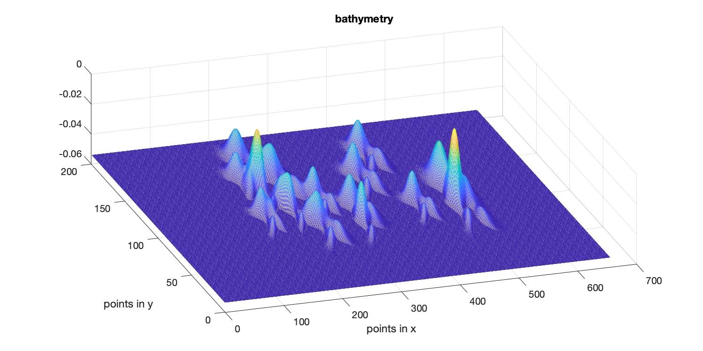
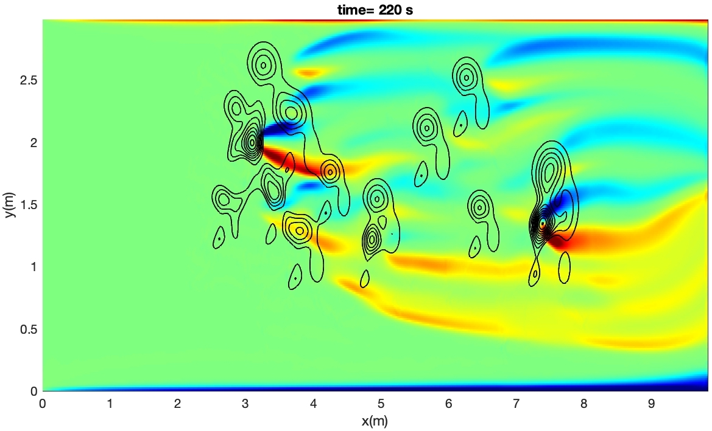

bathymetry with random distribution of rocks¶

In /ibm_lg_domain/ (Git repository)
- use mk_1_random_bathy.m to generate a flat bottom with random distribution of rocks as shown in the figure above.
- use mk_2_obstacle_files.m to get the obstacle input file: obs_mask.txt. Note, the matlab program doesn’t generate values of Rx, Ry and Rz. You should set OBS_Require_Rxyz= F in input.txt
- set up input.txt (same as lloyd case except the following changes)
! cell numbers Mglob = 656 Nglob = 200 Kglob = 30 ! --------------------OBSTACLE (IBM) --------------------------- OBS_Require_Rxyz= F OBS_MASK_FILE = obs_mask.txt
- post-processing can be done using plot_3d_data.m in the current folder.
